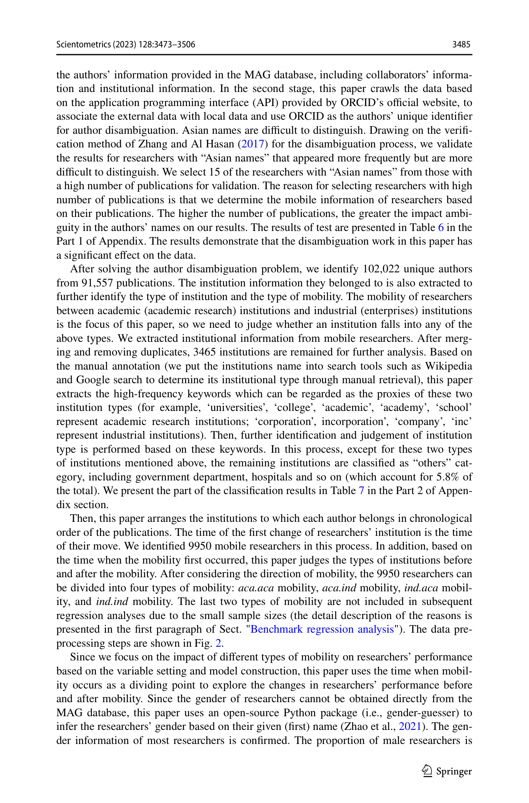
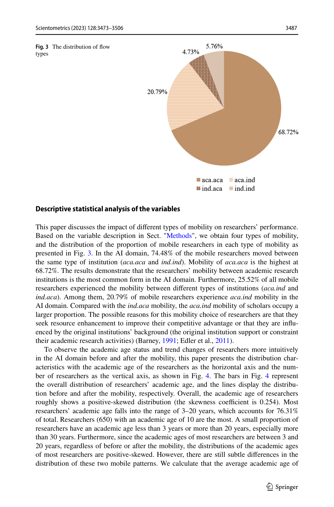

Figure 1
저자: Yitong Chen, Keye Wu, Yue Li, Jianjun Sun | 날짜: 06/2023 | Journal: Scientometrics | DOI: 10.1007/s11192-023-04690-w
Figure 1
AI 분야 연구자 9,950명의 기관 간 이동(학계→학계 vs. 학계→산업계)이 개인 성과에 미치는 영향을 propensity score matching(PSM)과 negative binomial regression으로 분석한 결과, 학계→산업계(aca.ind) 이동은 research capital(논문 수, 교신저자 논문 수) 축적에는 부정적이나, social capital(공저자 수, 고영향력 공저자 수) 축적에는 학계→학계(aca.aca) 이동보다 더 긍정적인 영향을 미친다.

Figure 2

Figure 3

Figure 4
총평: Research capital과 social capital 프레임워크를 통해 AI 분야 연구자의 이동 유형별 성과 차이를 체계적으로 분석한 유의미한 연구이나, 성과 측정이 양적 지표에 한정되고 MAG 데이터의 서비스 종료로 재현성에 한계가 있어 방법론적 보완이 필요하다.